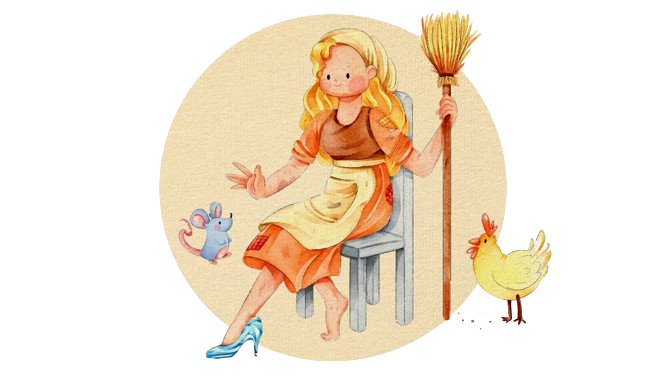
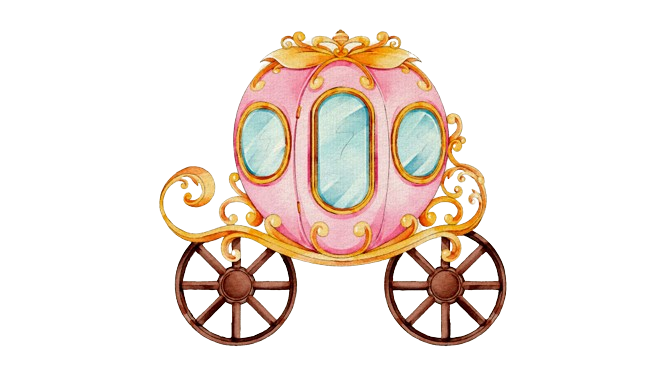

The Story of Cinderella
Once upon a time, in a faraway land, there was a beautiful and pious girl named Cinderella. She was the only child of a wealthy man and his beloved wife. Sadly, Cinderella’s mother fell ill and passed away, leaving her daughter with words of wisdom and love: “Dear child, be good and pious, and then the good God will always protect thee, and I will look down on thee from heaven and be near thee.” Cinderella was heartbroken by her mother’s death, but she remained faithful to her mother’s words and visited her grave every day to pray and weep.
As time passed, winter arrived and covered her mother’s grave with a white sheet of snow. When spring came, the man remarried a woman who had two daughters of her own. They were beautiful on the outside but wicked and cruel in their hearts. The stepmother and stepsisters were jealous of Cinderella's beauty and kind nature, so they treated her poorly and forced her to do all the housework.
They took away her nice clothes, made her wear an old grey bed-gown, and gave her wooden shoes. The wicked stepsisters mocked her and called her names like “kitchen-wench” and “Cinderella,” which means “little cinder girl.” Despite their mistreatment, Cinderella remained good and worked tirelessly, doing everything that was asked of her.
Her life was a daily struggle, from waking up before dawn to carrying water and chopping wood, to cooking and cleaning until late at night. Her stepsisters made her life even more miserable by pouring out her peas and lentils into the ashes, forcing her to pick them out one by one. Cinderella had no bed to sleep in and was forced to rest on the cold floor by the fireplace, which made her look dusty and dirty all the.
One day,Cinderella’s father was going to the fair, and he asked his stepdaughters what gifts they wanted him to bring back for them. They asked for
beautiful dresses, pearls, and jewels. When he asked Cinderella, she simply replied, “Father, break off for me the first branch which knocks against your
hat on your way home.”
On his way home from the market, Cinderella’s father bought beautiful dresses, pearls,and jewels for his two step-daughters.
As he rode through a green thicket, a hazel twig brushed against him, knocking off his hat. He broke off the branch and took it with him. Upon his arrival,
he gave his step-daughters the gifts they had asked for, but for Cinderella, he gave her the hazel branch.Cinderella thanked her father, went to her mother’s
grave, planted the branch on it, and wept so much that her tears watered it. The branch grew into a handsome tree, and three times a day, Cinderella would sit
beneath it, weep, and pray. A little white bird always came and if Cinderella expressed a wish, the bird would throw down to her what she had wished for.
Meanwhile, the King had appointed a festival to last three days, and all the beautiful young girls in the country were invited so that the Prince could choose
a bride. When Cinderella’s stepsisters learned of the festival, they asked her to comb their hair, brush their shoes, and fasten their buckles. Cinderella obeyed
but wept, wishing she could attend the dance as well. She begged her stepmother to allow her to go, but her stepmother refused, saying she was dirty and had
no suitable clothes or shoes.
As Cinderella continued to plead, her stepmother made a deal: if she could pick out a dish of lentils from the ashes in two hours,
she could go to the festival. Cinderella went to the garden, called upon the birds, and recited, “You tame pigeons, you turtle-doves, and all you birds beneath
the sky, come and help me to pick:

“Sort through the ash, winged friends of mine,
Help me find the lentils, pure and fine.”
Then, to Cinderella’s surprise, two white pigeons flew in through the kitchen window followed by turtle-doves and birds of all kinds, fluttering and chirping
as they landed among the ashes. The pigeons nodded their heads and began pecking at the grains, and the other birds soon joined in, picking the good ones
and leaving the bad. In no time, they had gathered all the good grains into a dish and flew away as quickly as they had come.
Cinderella was overjoyed
and took the dish to her stepmother, hoping it would convince her to let her attend the festival. But her stepmother was unimpressed and set Cinderella another
impossible task. She was to pick two dishes of lentils out of the ashes in one hour. Cinderella knew it was hopeless, but then she remembered the birds that had
helped her before. So she went out into the garden and cried out to them for help.
“Select the finest from the rest,
And gather what is truly blessed.”
To her amazement,the white pigeons and turtle-doves, as well as all the other birds in the sky, came whirring and crowding in once more. They landed amongst the ashes and began picking the good seeds into the dishes. Cinderella watched in awe as they finished the task in half an hour and flew away again. She brought the dishes to her stepmother, hoping it would finally convince her to let her go to the festival, but her stepmother remained cold-hearted and cruel.
“All this will not help thee; thou goest not with us, for thou hast no clothes and canst not dance; we should be ashamed of thee!” Her stepmother turned her back on Cinderella and left with her two daughters, leaving Cinderella alone once more.
As no one was at home, Cinderella went to her mother’s grave beneath the hazel-tree and cried out,
“My little tree, please do shiver,
And let silver and gold flow like a river.”
To her surprise, the bird threw a beautiful dress made of gold and silver, along with embroidered silk slippers. She quickly put on the dress and went to the festival.
Her step-sisters and stepmother did not recognize her,thinking that she was a foreign princess because of her stunning appearance. They never once thought that she could be
Cinderella, believing that she was still at home in the dirt, picking lentils out of the ashes. The prince was captivated by her beauty and danced with her all night.He would
dance with no other maiden, and if anyone else came to invite her, he said, “This is my partner.”
After dancing until evening, Cinderella wanted to go home,but the prince
offered to escort her. She managed to escape him, however, and ran into the pigeon-house. The prince waited until her father came and told him that the stranger maiden
had leapt into the pigeon-house. The old man thought it might be Cinderella and tried to find her. They searched inside the pigeon-house, but no one was there. When they
arrived home, Cinderella was lying in her dirty clothes among the ashes, and a dim little oil-lamp was burning on the mantle-piece. She had quickly jumped down from
the back of the pigeon-house and run to the little hazel-tree. There, she had taken off her beautiful clothes and laid them on her mother’s grave.The bird had taken them
away, and she had put on her grey gown, hiding in the kitchen.
The next day, when the festival began again and her parents and step-sisters had gone,
Cinderella went to the hazel-tree and said,
“My little tree, please do shiver,
And let silver and gold flow like a river.”
The next day, the bird brought down a dress even more beautiful than the one Cinderella wore the day before. She appeared at the festival,stunning everyone with her beauty.
The prince eagerly waited for her and danced only with her. Whenever someone else invited her to dance, he quickly claimed her as his own partner.As the evening drew to a
close, Cinderella wished to leave, but the King’s son followed her to discover where she lived.
Cinderella ran away from him and into the garden behind her house.
There stood
a tall, beautiful tree with magnificent pears hanging from it. She climbed up the tree so nimbly that the King’s son could not keep up with her. He waited until her father arrived
and said to him,“The stranger-maiden has escaped from me, and I believe she has climbed up the pear-tree.”
Cinderella’s father thought that it might be her and had
the tree cut down
with an axe. However, when they searched the tree, there was no one there. Cinderella had jumped down on the other side of the tree and made her way back to the kitchen,where she lay
in the ashes as usual. She had taken the beautiful dress to the bird on the little hazel-tree and put on her grey gown.
On the third day, when her family had left for the festival,Cinderella went to her mother’s grave and recited
the same spell as before. The bird threw down a dress more splendid and magnificent than any before, with golden slippers to match. At the festival, no one knew what to say when they saw Cinderella in her stunning dress. The King’s son danced only with her and refused to allow anyone else to dance with her, insisting that she was his partner.
As evening fell, Cinderella knew she had to leave the grand ball, and the Prince desperately wanted to follow her, but she escaped too quickly for him to catch up. However, the Prince had a plan. He smeared the entire staircase with pitch, and as Cinderella ran down it, her left slipper got stuck. The Prince picked it up, and it was small, delicate, and made of pure gold.
The next day, the Prince went to Cinderella’s home with the slipper and announced that he would marry only the woman whose foot fit this golden slipper. The two stepsisters were thrilled, as they believed they had pretty feet. The older stepsister tried the slipper on in her room with her mother by her side. She could not fit her big toe in it, and the shoe was too small for her. Her mother gave her a knife and told her to cut off her toe, saying, “When you become Queen, you won’t have to walk anywhere.” The stepsister cut off her toe, forced her foot into the shoe, and swallowed her pain before going to the Prince. He took her on his horse and rode away with her as his bride.

As they passed the hazel tree, the two pigeons sang once more:
“Behold, within the shoe there’s blood,
Too small it is, this is no dud,
The true bride is still yet to come,
Turn and seek, don’t be undone.”
The Prince looked down and saw the blood dripping from Cinderella’s shoe, staining her white stocking. He turned his horse around and brought the false bride back.
“This is not the right one,” he said. “Do you have no other daughter?” “No,” the man replied. “There is only a little kitchen-wench left by my late wife, but she can’t be
the bride.” However, the Prince insisted on seeing her, and Cinderella had to be called.
After washing her hands and face, Cinderella approached the Prince, who
handed her the golden shoe. She sat down, removed her heavy wooden shoe, and slipped her foot into the delicate shoe, which fit perfectly. As she stood up, the Prince
recognized the beautiful maiden he had danced with and exclaimed, “That is the true bride!”
The stepmother and stepsisters were horrified and filled with rage. The
Prince, however, took Cinderella on his horse and rode away with her. As they passed the hazel tree, the two white doves cried out,
“Turn and glance, turn and glance,
No blood stains her shoe,
The shoe fits her perfectly,
The true bride is riding with you.”
The two doves then flew down and placed themselves on Cinderella’s shoulders, one on the right and one on the left, and remained sitting there.
When the wedding with
the Prince had to be celebrated, the two false sisters came and wanted to share Cinderella’s good fortune. When the betrothed couple went to church, the elder sister was at the right side and the younger at the left. The pigeons pecked out one eye of each of them. Afterwards, as they came back, the elder was at the left and the younger at the right, and the pigeons pecked out the other eye of each.
And so, for their wickedness and falsehood, they were punished with blindness as long as they lived. But Cinderella married the Prince and lived happily ever after.
The Story of Cinderella